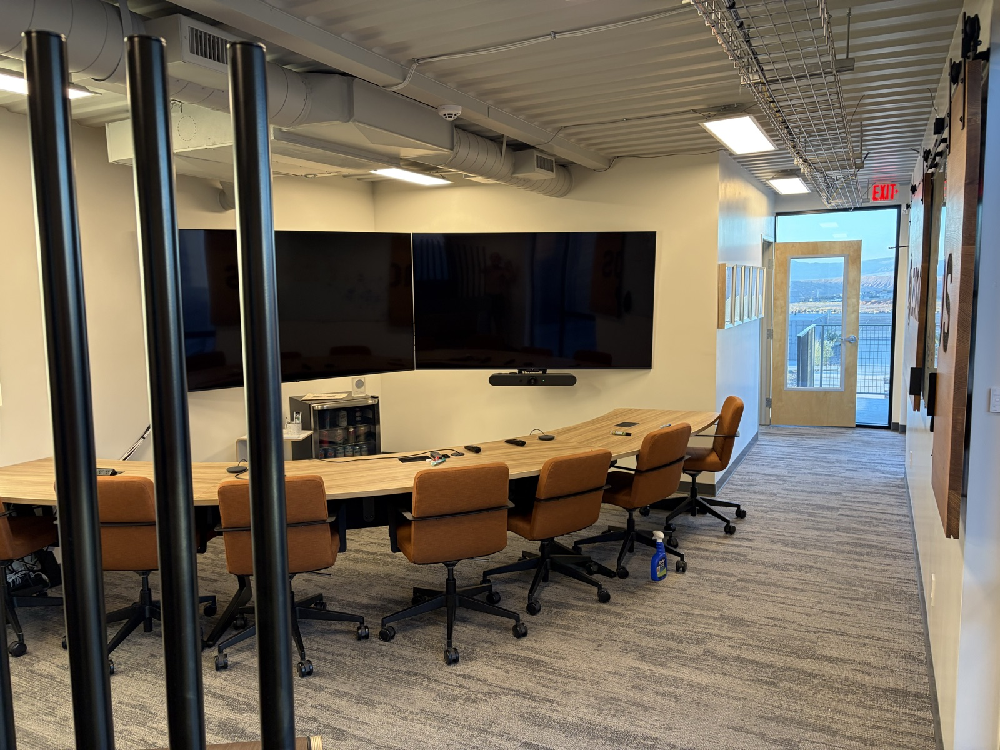
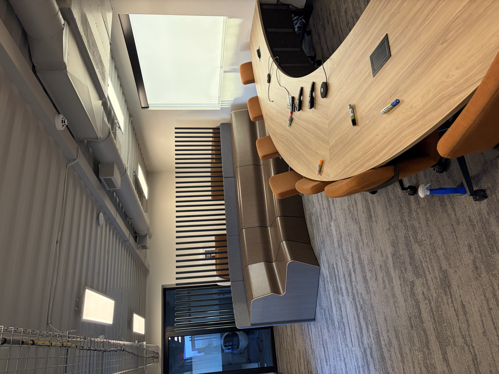
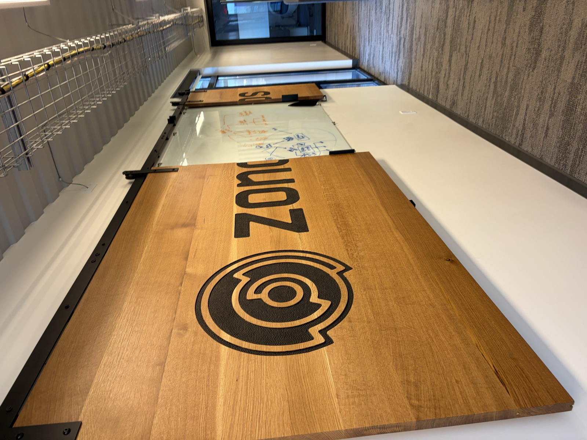
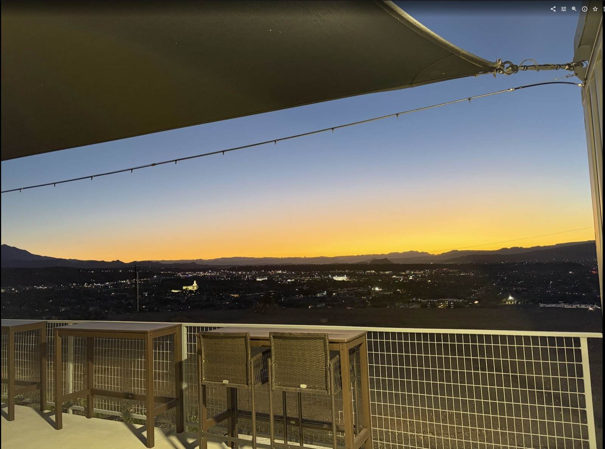

How we work
The working day
This is the page that matters most to the design, because the building exists to serve a working day that already looks different from a normal office. Roughly 70 to 75% of everyone's time is heads-down computer work; the rest is meetings and collaboration. The details below are observations of how the team actually operates, and the intent is for the design team to come watch for themselves.
The defining behavior
Voice and AI
Zonos runs AI-first. The team dictates into AI tools at their desks through the day, and meetings increasingly feed AI that drafts the work in real time: the customer email, the deck change, the code. Two consequences for a building:
The open floor is an acoustics problem
People talking to computers all day, side by side, without one person's dictation becoming a neighbor's noise. Gadget workarounds like dictation masks are out. Nobody has fully solved this; it may be the most interesting design problem in the program.
Rooms that hear everyone
Collaboration rooms want microphone coverage clear enough that AI catches every voice, cameras that capture whiteboards, and screens as a native part of the room rather than bolted on afterward.
Two AI rooms, not one
The current campus has a war room: cameras, whiteboards, and televisions arranged so a meeting feeds AI while it happens. The thinking for the new building splits that into two rooms with the same equipment spine and different jobs:
- An external AI room, designed like today's war room, for meetings with customers, partners, and visitors: the room that demos how Zonos works by working that way in front of guests.
- An internal AI room, the same television and capture setup in a larger room, sized for the team's own working sessions, where more people, more whiteboards, and more wall space make the format work better than the current room allows.


Revenue tripled in 18 months with no net headcount added. The bet is that a small team with excellent tools keeps outproducing bigger ones, which is why the space thinking runs toward more room per person, not more people per room.
The rhythm
Collaboration and focus
- An open-floor idea under debate: set days each week when everyone, me included, works one open floor; two desks per person; desks on wheels; seating rearranged by project, a customs broker next to a software engineer when the work calls for it. This is an experience I am debating, not a policy I am announcing.
- Deep focus is protected. The old hangar taught the failure mode: support interrupting engineers all day. The containers taught the opposite failure: teams siloed into separate boxes. The building should create chance encounters without interrupting focus work.
- Whiteboards are the native medium. Analog boards, everywhere, photographed and fed to AI rather than replaced by screens. Boards that can be moved or concealed, because they hold confidential work and get covered before video calls today.
- The wall is another screen. Large architectural prints, 36 by 48 inches, go up on the walls as working documents: plans, maps, diagrams the team stands in front of. The practice wants a wall system where prints insert and remove easily (rails, clips, or frames, not tape), and an in-house large-format printer so a print costs minutes, not a trip across town. The organization is flat, and the walls work the same way: whoever printed it pins it.
- Sales calls happen at desks and add energy to the floor. Phone booths exist but are not the default posture.
- Walking meetings are real. The team walks the rim trail daily, and reviews documents by voice while moving. The trail is workspace.
- The day starts at dawn. I get here between 4:45 and 5:00 am, and sunrise on the deck, alone, before anyone arrives, is my favorite part of the day. Most of the team lands between 8:00 and 8:30. A building that is good at 5 am is a real requirement here.
- Customers visit. Merchants fly in from around the world; the building is part of how Zonos presents itself, and a space that demos the product well keeps coming up.
- Printed customs paperwork arrives daily, in volume. A real mail and print room, not a closet.


Scale
Headcount
About 106 people today, most in St. George. Planning conversations have run scenarios from roughly 250 people at move-in to several hundred within five years, and the current campus tops out near 270 under pressure. The working posture: build generous room per person for a team that grows deliberately, and let phase two carry the far cases. Nothing about headcount is a commitment; the honest answer is a range.
One more fact about the team the building serves: dozens of employees across every department are studying for the customs broker exam, a test with a pass rate near 12 percent. Most will not pass, and the studying still builds trade depth across the whole company. The moat is people who understand trade, not just code, and the building's library and quiet rooms serve that habit directly.